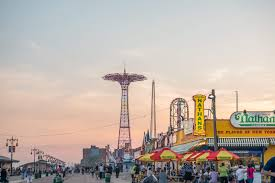
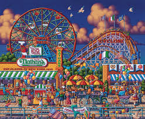
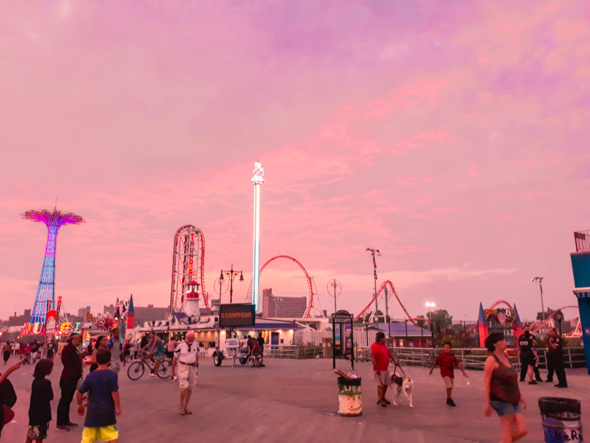

What Is The Mermaid Parade...
The Mermaid Parade is an annual art parade held in Coney Island, Brooklyn, celebrating the start of summer and featuring a vibrant display of marine-themed costumes, floats, and performers. It's the largest art parade in the nation and is known for its unique, handcrafted, and often quirky costumes. The parade also includes antique cars, marching bands, and drill teams, drawing hundreds of thousands of spectators.